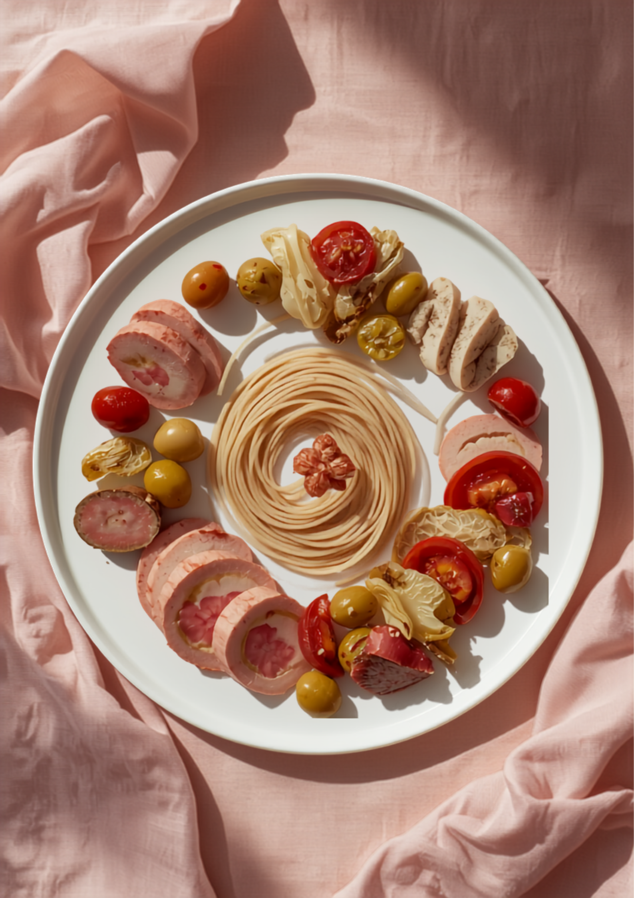
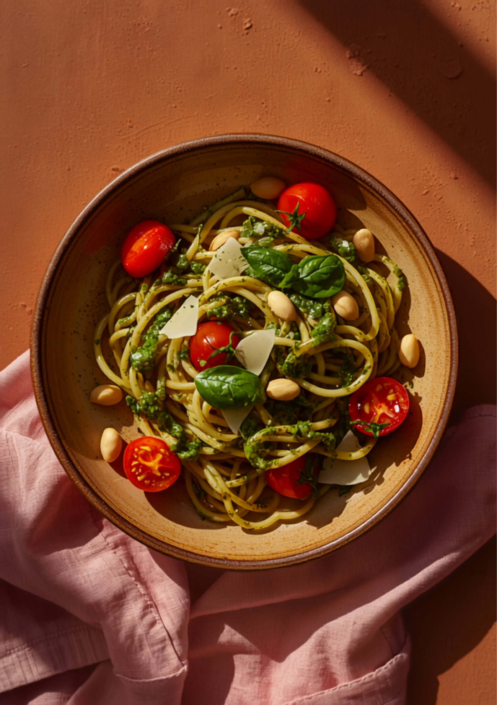
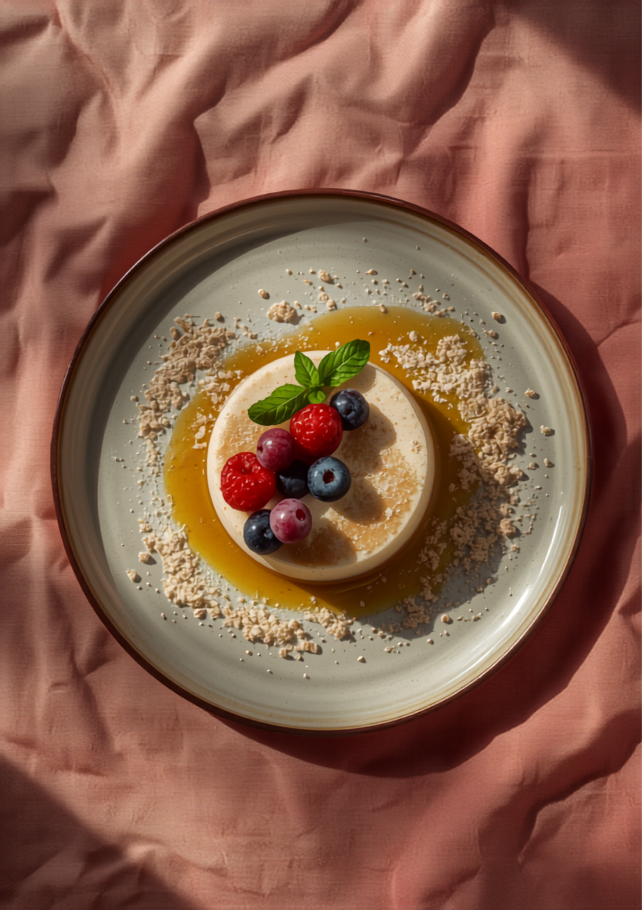

前菜の盛り合わせ ── そばの素材を、シックなプレートに。
和食・洋食の料理経験を活かした「洋風そば食堂」という、ユニークなコンセプト。そばの新しい領域に挑戦し続けているお店です。
リングを降りた店主が、和食と洋食の経験を携えて辿り着いたのが「そば」でした。福井県産のそば粉を使った二八蕎麦は、しなやかで滑らか。
そこに、洋の技法を掛け合わせる。「そばってパンナコッタにまで使えるのか…」——訪れた人が、そばの無限の可能性に驚かされます。
カウンター4席、テーブル数卓。大将のワンオペで、一皿ずつ丁寧に。

05 ── バジル更科と二八蕎麦の、食べ比べ盛り。
そばの概念が、変わる。
── 前菜からデザートまで、すべてにそばが使われている。
カヌレ、パンナコッタ、ガトーショコラ。デザートにも、もちろん全てそばが使われています。
特に印象的なのが、パンナコッタ。キャラメルソースにはそば粉が使われ、重厚な味わいに。締めのそば茶の、香ばしい風味とほのかな甘みまで。そば尽くしの、幸福な余韻です。
そば粉100%のパンや、そば粉のガレットなど、コースの随所にそばが顔を出します。

06 ── そば粉のカヌレとパンナコッタ。締めまでそば。
そば尽くし。「そば」の新たな一面、無限の可能性を感じさせてくれるお店でした。そばの概念が変わること間違いなし。ごちそうさまでした。
── ランチコースを頂いた方
店主の蕎麦愛が伝わってきます。どれも美味しかったです。また伺いたいです。更科蕎麦のバジル、つけ汁がクリーミーでトマト感もありウマし。
── 食べ比べ盛りそばの方
アットホームでとても過ごしやすい！店員さんの笑顔がとてもステキです。初めての洋風そば、すごく美味しかった。次はぜひディナーにも。
── 初めて訪れた方